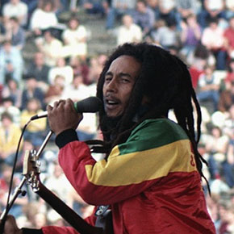
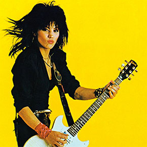
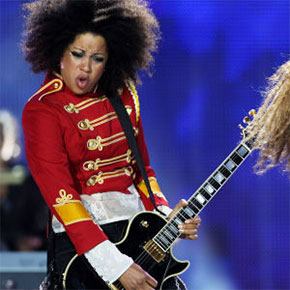
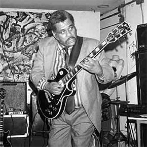
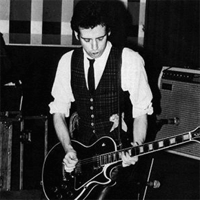
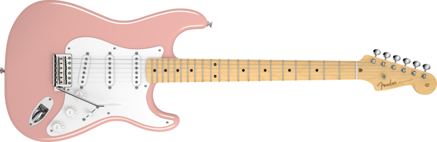

Gibson
Gibson's most famous model is probably the Les Paul.
That model has come in a great variety, from the budget “Junior” model to the expensive Custom Shop models.
Gibsons typically come with humbucking pickups.

Famous Gibson Players
Bob Marley
Joan Jett
Bibi McGill
Sonny Sharrock
Joni Mitchell
Mick Jones
Fender
Fender's most famous model is undoubtedly the Stratocaster.
Other influential Fender models include the Telecaster, Jazzmaster, Jaguar, and Precision bass.
Fender guitars are best known for single-coil pickups.
